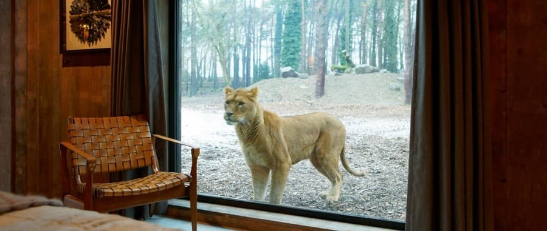
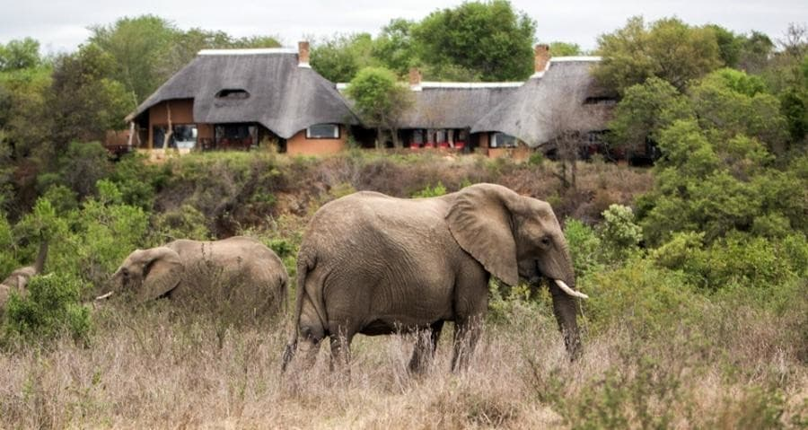
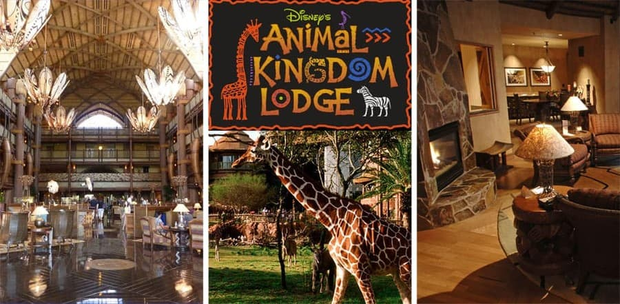

ТОП-5 найекзотичніших готелів світу
1. «Giraffe Manor», Кенія
У заповідній зоні Кенії, точніше, в Найробі (селище Карен), знаходиться ферма з жирафами. Основною метою фермерського господарства є збереження жирафів Ротшильда. Цей екзотичний вид відрізняється 5 ріжками на голові. Жирафи Ротшильда вважаються рідкісними тваринами. У природі їх залишилося близько семисот. На фермі займаються розмноженням і вирощуванням жирафів Ротшильда. Тому, побачивши спокійно гуляючого жирафа не дивуйтеся, тут це поширене явище.

2. «Port Lympne Hotel and Reserve», Англія
В Англії, в сафарі парку побудували пристойний «Port Lympne Hotel and Reserve». Він розташувався на території заповідника Порт Лімпн, який займає площу 6 га. Для поселення гостей передбачені п'ятизіркові будиночки. Вони укомплектовані всім необхідним для проживання. З вікон «Port Lympne Hotel and Reserve» відкривається прекрасний краєвид, вид на болота Ромні та околиці. Всі номери оформлені в унікальному дизайні, вмістили екстравагантні меблі. Ванна кімната укомплектована наборами косметики, купальними костюмами й банними аксесуарами. Для гостей пропонується безкоштовна стоянка, Інтернет, сніданок.
3.«Phinda Forest», ПАР
У Південній Африці, в приватному заповіднику «Фінден» знаходиться затишний лодж. Для гостей пропонується поселення в затишних котеджах та бунгало на території паркової зони. Всі номери оснащені меблями, безкоштовним Інтернетом, кондиціонером, ванною кімнатою. Можливий трансфер, послуги няні. У заповіднику гості зможуть милуватися незайманою людиною природою, рідкісними видами рослин, птахів і тваринним світом. Саме тут можна відпочити душею й тілом.
4.«Royal Malewane», ПАР
В одному з парків ПАР розташувався «Royal Malewane». Для поселення гостям пропонуються в комфортабельні котеджі лоджа. Для гостей передбачені: зручні меблі, вишукане оформлення кімнат, бібліотека, ресторан, магазин. Особливістю є: антикварні меблі, перські килими, вишукані предмети інтер'єру. У лоджі 8 бунгало, які з'єднані між собою й з головною будівлею переходом. У кожному бунгало знаходяться: спальня, вітальня з каміном, тераса з меблями, ванна кімната з душем. Сніданки подаються в бунгало або на терасі. На столі можна помітити столове срібло, кришталь. Страви подаються вишукані та смачні від відомих шеф-кухарів. Кухарі були відзначені престижними преміями на міжнародних конкурсах.

5. «Disney's Animal Kingdom Lodge Resort», США
«Disney's Animal Kingdom» був відкритий у 2001 році і являє собою тематичний сафарі-парк. У парку мешкає понад 200 видів птахів і тварин. 6 поверхів будівлі приймають гостей з усього світу. Апартаменти оформлені в красивих фарбах, які нагадують життя в савані. Стіни номерів прикрашають роботи місцевих майстрів, якісний текстиль і дерев'яні аксесуари нагадують про диких тварин. Гості «Disney's Animal Kingdom» можуть з балкона свого номера побачити слонів, антилоп, буйволів, зебр, жирафів. Гості можуть відвідати басейн, ресторан, СПА-центр, магазини, комп'ютерні клуби. За бажанням, організовуються екскурсії і сафарі.
На головну